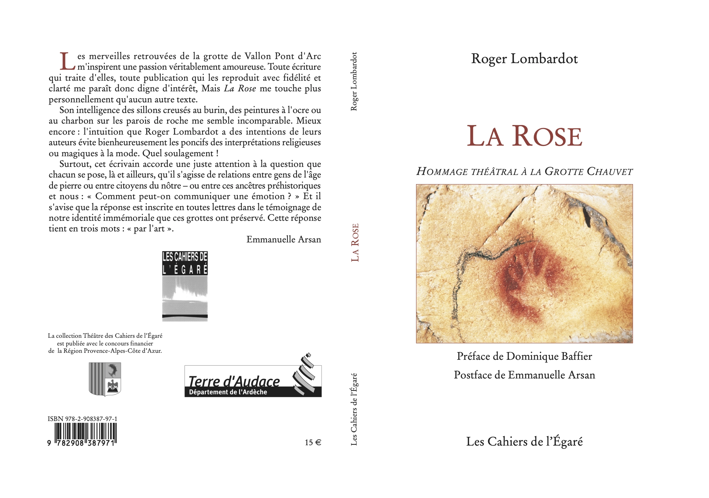
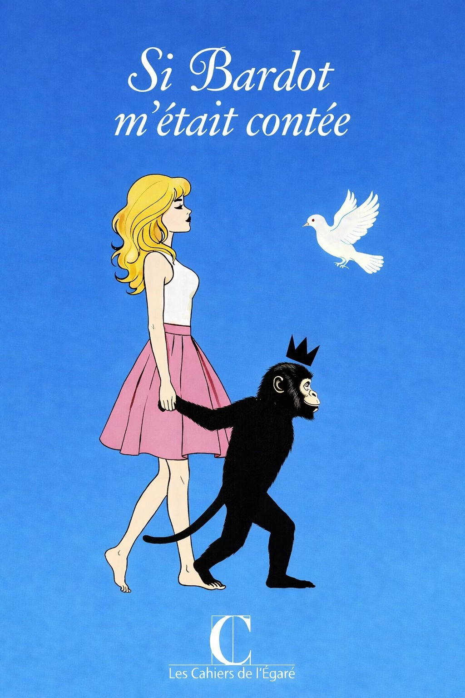

Vous ne saurez jamais ce qui se cache sous mes paupières...
à paraitre le le 30 juin 2026

Ce livre comprendra La Rose, 1° volet, édité en 2003, réédité en 2007, Homo Botticelli, 2° volet, édité en 2013, L’oeil de Dieu, 3° volet, créé en septembre 2025 à Laurac-en-Vivarais et repris dans la grotte Chauvet 2 les 27 et 28 mars 2026. Il sera préfacé par Valérie Moles, conservatrice de la grotte Chauvet 2, comportera le témoignage du 1° journaliste à avoir rendu compte de la découverte de la grotte le 18 décembre 1994, un texte de Roger Lombardot et une postface de l’éditeur accompagnant cette aventure depuis 13 ans.
à paraître le 15 aout 2026
Il y eut le retour du 14 octobre 2014 de Bruno Ricard sur l’article Brigitte Bardot 80 ans : « j'ai réfléchi sur votre futur projet d'ouvrage sur la sublime BB, c'est une très bonne idée »

Il y eut la pensée vague d’un livre pluriel sur Brigitte Bardot, lors d’une exposition des Couleurs Revestoises, marrainée par elle, à la Maison des Comoni, au Revest, le 24 décembre 2024
Il y eut le vague projet 2026 Brigitte Bardot émergeant du quart d’heure de méditation le 25 octobre 2025
Il y eut le rêve offrant le projet avec les mots Initials BB, Essentials Sanctuary, dans la nuit du 19 au 20 novembre 2025
Il y eut le 1° appel à textes, le 29 novembre 2025
Il y eut le décès de Brigitte Bardot, le 28 décembre 2025
il y eut le refus d'un hommage national et de la présence de jupibientôtàterre, le 31 décembre 2025
Il y eut les obsèques dans l'intimité, le 7 janvier 2026
Il y eut le 2° appel à textes, le 15 janvier 2026
Huée à la 51° cérémonie des César, le 26 février 2026
Il y eut la messe-hommage à l'église Saint-Roch à Paris, le 28 janvier 2026
Ignorée à la 98° cérémonie des Oscar, le 16 mars 2026
Il y eut 45 textes proposés, le 31 mars 2026
Vivante avec sa Biographie symphonique au Palais des Congrès à Paris, le 2 avril 2026
?? au 79° festival de Cannes du 12 au 23 mai 2026
Portrait vert par Andy Wharol, vendu aux enchères à New York en mai 2026 (entre 14 et 18 millions de dollars)